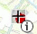
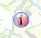
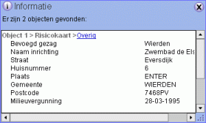
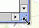

| Informatie over een bepaald object of gebied in de kaart opvragen gaat door middel van de informatie opvragen knop. Als deze knop actief is betekent een klik op de kaart informatie opvragen van de plek waar geklikt is. | |
|  | De muisaanwijzer bevat een plusje wat de exacte plek aangeeft van een muisklik. Tijdens de klik geeft een grijs vierkantje aan van welk gebied in de kaart informatie wordt opgevraagd. |
|  | Op de aangeklikte plek in de kaart verschijnt een knipperend i-symbool. Hierdoor is het duidelijker waar de opgevraagde informatie bij hoort. |
De opgevraagde informatie wordt getoond in het Informatie scherm:

|  | De grootte van het Informatie scherm kan veranderd worden door de rechteronderhoek te verslepen. |
Het Informatie scherm kan verplaatst worden door het te verslepen. Doordat het Informatie scherm enigszins doorzichtig wordt is het eenvoudig te bepalen waar deze het beste geplaatst kan worden.